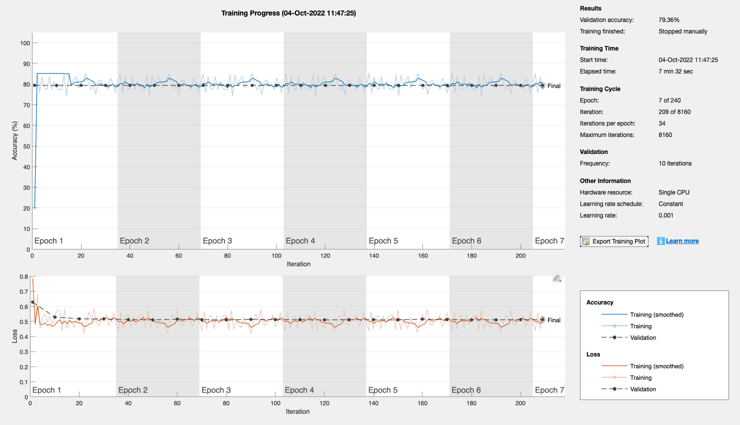

Train and test the sentence completion neural net
Loads the Sentences mat-file.
Contents
See also
PrepareSequences, sequenceInputLayer, bilstmLayer, fullyConnectedLayer, softmaxLayer, classificationLayer, classify
Load the data
s = load('Sentences'); n = length(s.c); % number of sentences % Make sure the sequences are valid. One in every 5 is complete. for k = 1:10 fprintf('Category: %d',s.c(k)); fprintf('%5d',s.nZ{k}) fprintf('\n') if( mod(k,5) == 0 ) fprintf('\n') end end
Category: 0 141 2551 2953 2296 5229 4508 4872 5228 5867 559 849 484 3709 490 329 660 490 559 1424 464 2783 173 Category: 0 141 2551 2953 2296 5229 4508 4872 5228 5867 559 849 484 3709 490 329 660 490 559 2878 464 2783 173 Category: 1 141 2551 2953 2296 5229 4508 4872 5228 5867 559 849 484 3709 490 329 660 490 559 4365 464 2783 173 Category: 0 141 2551 2953 2296 5229 4508 4872 5228 5867 559 849 484 3709 490 329 660 490 559 3320 464 2783 173 Category: 0 141 2551 2953 2296 5229 4508 4872 5228 5867 559 849 484 3709 490 329 660 490 559 5642 464 2783 173 Category: 1 154 5663 2311 3797 587 329 4754 490 3797 587 329 736 5783 2198 575 1450 2783 1962 3582 490 1336 Category: 0 154 5663 2311 3797 587 329 4754 490 3797 587 329 736 5783 2198 575 4052 2783 1962 3582 490 1336 Category: 0 154 5663 2311 3797 587 329 4754 490 3797 587 329 736 5783 2198 575 2786 2783 1962 3582 490 1336 Category: 0 154 5663 2311 3797 587 329 4754 490 3797 587 329 736 5783 2198 575 3408 2783 1962 3582 490 1336 Category: 0 154 5663 2311 3797 587 329 4754 490 3797 587 329 736 5783 2198 575 1192 2783 1962 3582 490 1336
Set up the network
numFeatures = 1; numHiddenUnits = 200; numClasses = 2; % Good results with validation frequency of 10 and 200 hidden units layers = [ ... sequenceInputLayer(numFeatures) bilstmLayer(numHiddenUnits,'OutputMode','sequence') dropoutLayer(0.2) bilstmLayer(numHiddenUnits,'OutputMode','last') fullyConnectedLayer(numClasses) softmaxLayer classificationLayer]; disp(layers)
7×1 Layer array with layers:
1 '' Sequence Input Sequence input with 1 dimensions
2 '' BiLSTM BiLSTM with 200 hidden units
3 '' Dropout 20% dropout
4 '' BiLSTM BiLSTM with 200 hidden units
5 '' Fully Connected 2 fully connected layer
6 '' Softmax softmax
7 '' Classification Output crossentropyex
Train the network
kTrain = randperm(n,0.85*n); xTrain = s.nZ(kTrain); % sentence indices, in order yTrain = categorical(s.c(kTrain)); % complete or not? % Test this network - results show overfitting kTest = setdiff(1:n,kTrain); xTest = s.nZ(kTest); yTest = categorical(s.c(kTest)); options = trainingOptions('adam', ... 'MaxEpochs',240, ... 'GradientThreshold',1, ... 'ValidationData',{xTest,yTest}, ... 'ValidationFrequency',10, ... 'Verbose',0, ... 'Plots','training-progress'); disp(options) net = trainNetwork(xTrain,yTrain,layers,options); yPred = classify(net,xTest); % Calculate the classification accuracy of the predictions. acc = sum(yPred == yTest)./numel(yTest); disp('All') disp(acc); j = find(yTest == '1'); yPredC = classify(net,xTest(j)); accC = sum(yPredC == yTest(j))./numel(yTest(j)); disp('Correct') disp(accC);
TrainingOptionsADAM with properties:
GradientDecayFactor: 0.9
SquaredGradientDecayFactor: 0.999
Epsilon: 1e-08
InitialLearnRate: 0.001
LearnRateSchedule: 'none'
LearnRateDropFactor: 0.1
LearnRateDropPeriod: 10
L2Regularization: 0.0001
GradientThresholdMethod: 'l2norm'
GradientThreshold: 1
MaxEpochs: 240
MiniBatchSize: 128
Verbose: 0
VerboseFrequency: 50
ValidationData: {{780×1 cell} [780×1 categorical]}
ValidationFrequency: 10
ValidationPatience: Inf
Shuffle: 'once'
CheckpointPath: ''
CheckpointFrequency: 1
CheckpointFrequencyUnit: 'epoch'
ExecutionEnvironment: 'auto'
WorkerLoad: []
OutputFcn: []
Plots: 'training-progress'
SequenceLength: 'longest'
SequencePaddingValue: 0
SequencePaddingDirection: 'right'
DispatchInBackground: 0
ResetInputNormalization: 1
BatchNormalizationStatistics: 'population'
OutputNetwork: 'last-iteration'
All
0.79359
Correct
0
 Copyright
Copyright (c) 2019, 2022 Princeton Satellite Systems, Inc. All rights reserved.